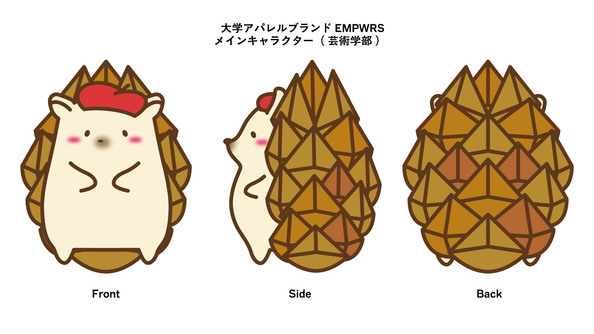
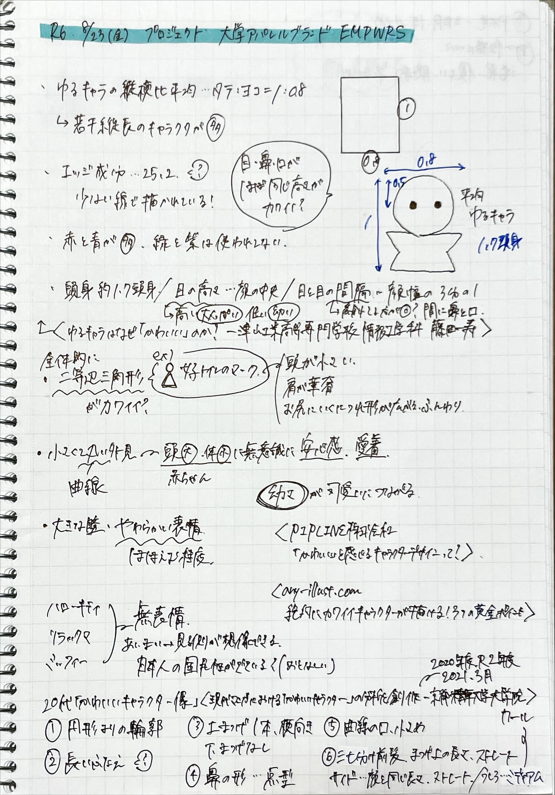

Work03 キャラクターデザイン
同学科の学生が立ち上げたプロジェクト「大学アパレルブランド『EMPWRS』」のキャラクターデザインをしました。
大学アパレルブランド「EMPWRS」とは
九産大の在学生・卒業生をターゲットに、大学のキャラクターを活用したファッションブランドを通して、九産大の新しい魅力を創造・発信することを目的としたプロジェクトです。


クライアント
---
担当した作業
キャラクターデザイン
制作期間
2024.8.4 - 9.4
使用したソフト
Adobe Illustrator
注意・工夫した点
キャラクターをデザイン面で注意して見たことがなかったので、人気のキャラクターにある特徴や、親しみやすいキャラクターの傾向などを調べてから制作した点。
課題
完成したキャラクターのポーズが変えにくく、バリエーションが増やしにくい点。また機会があれば、最初に3Dモデルを作ってから作る方法も検討したい。